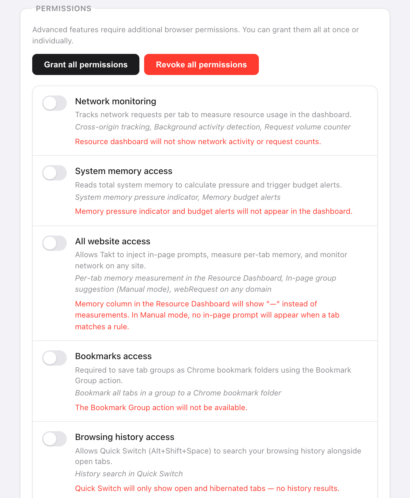

Short answer: Takt sends no browsing data anywhere. It makes two kinds of network request, and both are listed below.
- Licence check to ExtensionPay: at startup, every 15 minutes, and when you open the popup.
- Google Drive sync: only if you connect it (Premium).
- No account, no analytics, no telemetry. AI grouping runs on Chrome's on-device model.
Why should I trust a tab extension at all?
You may not, and that's reasonable. In 2021 Google removed The Great Suspender, a tab suspender extension, after malicious code turned up in a version released after it was sold. Its users had installed something useful, and an update turned it against them.
A tab manager needs to read your tab URLs to work. So the useful questions are: what does it do with them, who else gets them, and can that change without you noticing? The rest of this page answers those for Takt, with things you can check yourself.
What stays on my machine?
Everything Takt knows about your browsing lives in Chrome's own extension storage:
- Rules, settings and profiles in
chrome.storage.sync. - Sessions, hibernated tabs, rule match counts and the domain history behind rule suggestions in
chrome.storage.local.
One caveat: if Chrome Sync is on, Chrome itself copies chrome.storage.sync between your devices through your Google account. That is a Chrome feature, not a Takt server.
Which servers does Takt contact?
| Service | When | What it receives |
|---|---|---|
| ExtensionPay (licence) | At startup, every 15 minutes, when you open the popup | A random licence key. No URLs, no tab data. |
| Google Drive API | Only after you connect Drive. Every 15 minutes if auto-sync is on. | Takt's own sync files, in Drive's hidden app folder |
| Google sign-in | When you connect or disconnect Drive | On connect, a lookup of your email to show which account is linked. On disconnect, a request to revoke Takt's access token. |
A detail worth knowing: ExtensionPay only creates that licence key when you first open the upgrade or log-in page. Until then the check finds no key and ends without a network request.
Drive sync uses the drive.appdata scope. Takt can read and write its own files in a hidden folder and cannot see the rest of your Drive. Folder sync, the other backup option, writes to a folder you pick; your own cloud client does any uploading.
Two more things open a web page, and neither is a background request. The review link opens the Chrome Web Store when you click it. And when you uninstall, Chrome opens a feedback page that receives coarse values such as version, plan and a rule-count range. The privacy policy lists every value.
Is the AI grouping on-device?
Yes. Group with AI uses Chrome's built-in language model, which runs on your computer. Chrome downloads the model on first use, and Takt shows the progress. If the model isn't available, Takt groups by similarity instead, also locally.
To be exact about what the model sees: each tab's title and, for pages Chrome lets Takt read (all-sites access grants that), the first 500 characters of visible text. That text goes to the model on your machine and nowhere else. There is no Takt server to send it to.
Chrome's own AI "Organize Similar Tabs" feature, which some guides still mention, ran in the cloud, not on your device, and Google retired it in 2025. If you only want to tidy up now and then, Chrome's tab groups and Memory Saver may be enough, and they need no extension. Takt is for rules that persist, duplicate blocking, hibernation and sessions on top.
Why does Takt ask for each permission?
Eight permissions are granted at install. Each one maps to a feature:
| Permission | Why |
|---|---|
tabs | Read tab URLs and titles to match your rules |
tabGroups | Create, name, color and collapse groups |
activeTab | Act on the current tab when you click in the popup |
storage | Save rules, settings, sessions |
scripting | Show the duplicate toast and the Quick Switch overlay; read page text for AI grouping |
contextMenus | Right-click items such as Hibernate this tab |
notifications | Alerts such as memory budget warnings |
alarms | Timed jobs: auto-hibernate, profile schedules, the licence check |
Everything else is optional and off until a feature needs it: webRequest, system.memory and all-sites access for the Resource Dashboard (all-sites access also lets AI grouping read page text), bookmarks for Bookmark Group, history for Quick Switch search and rule suggestions, downloads for Quick Switch search, identity for Drive sync. You can revoke any of them in Settings, or set Takt to never ask.

How can I check this myself?
- Open
chrome://extensionsand turn on Developer mode. - On the Takt card, click service worker next to "Inspect views".
- Open the Network tab and keep browsing. You should see only the requests in the table above, plus Takt reading its own
chrome-extension://files.
Takt's content security policy is script-src 'self'. It can only run code bundled in the extension, so it can't fetch new code from a server. Any change in behavior has to ship as a new Chrome Web Store version.
What this doesn't protect you from
- You still trust the updates. Chrome installs new versions automatically. No policy can stop a future version from changing; the network tab is how you'd notice.
- ExtensionPay is a third party. Once a licence key exists, it sees the key and, like any server, your IP address.
- The
tabspermission is broad. Takt can read every tab's URL and title. That's how rules work. What matters is that it stays on the machine.
A tab manager with nothing to phone home to.
Add Takt to Chrome, freeFAQ
Does Takt send my browsing history or tab URLs anywhere?
No. Rules, matching, sessions, hibernated tabs and suggestions stay in Chrome's storage on your machine. The only data that leaves is the licence check and, if you connect it, Takt's sync files in your own Google Drive.
Does Takt need an account?
No. There is no Takt account. Premium ($3/month or $30/year) is paid through ExtensionPay, which uses Stripe.
Is Takt's AI grouping done in the cloud?
No. It uses Chrome's built-in on-device model. Without the model, Takt groups by similarity, also locally.
Why does Takt need the tabs permission?
To read each tab's URL and title and match them against your rules. Matching happens in the browser; nothing is transmitted.
How is this different from The Great Suspender?
The Great Suspender was removed in 2021 after malicious code appeared in a version released after it was sold. Takt's content security policy only allows bundled scripts, so any change has to ship as a new Chrome Web Store version you can inspect.